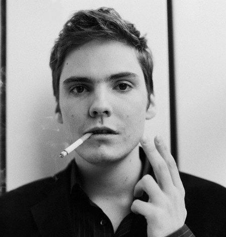
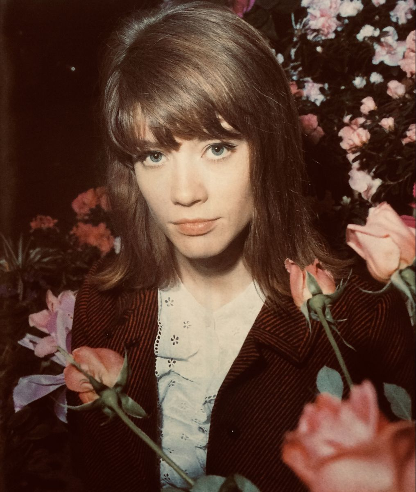
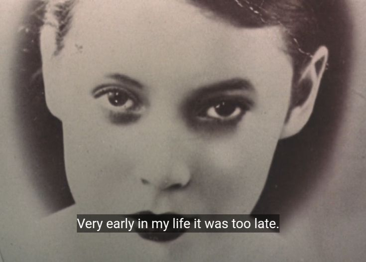
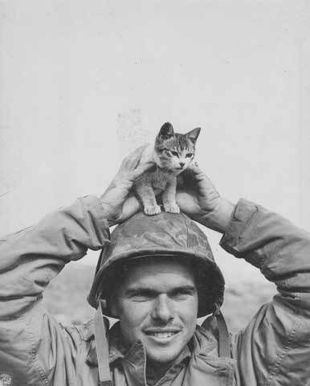
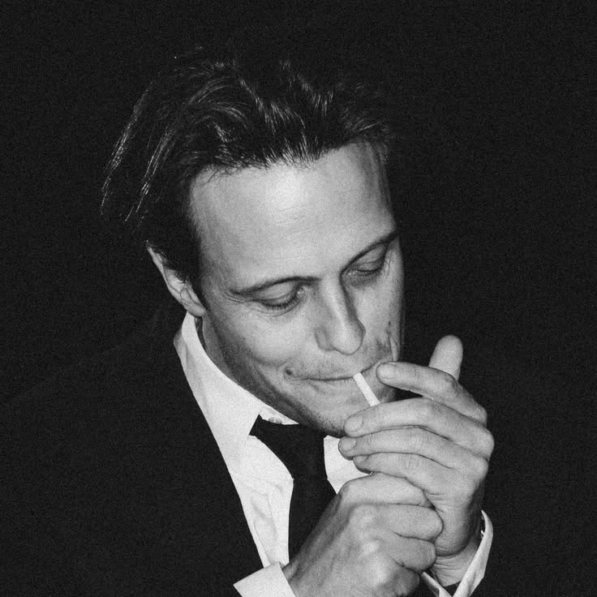
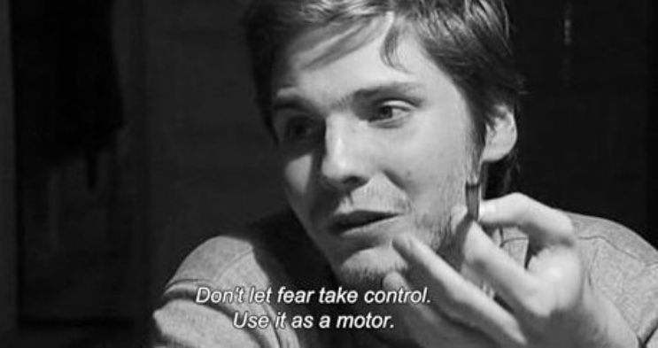
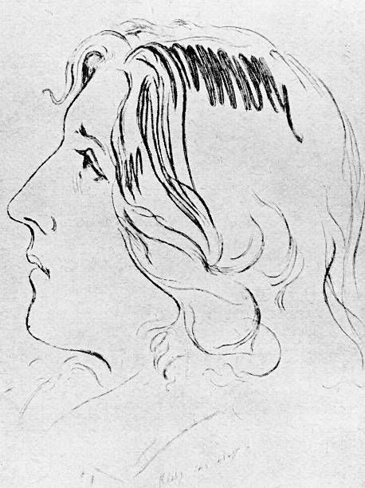

This is a photo of quentin tarantino holding a gun. Quentin is a famous movie director known for creating amazing movies such as Inglourious Basterds and Pulp Fiction!

This is a photo of daniel bruhl holding a cigarette. Daniel Bruhl is a famous German-Spanish actor who is known for great roles such as Niki Lauda - Rush 2013, Fredrick Zoller - Inglourious Basterds 2009 and Helmut Zemo in Civil War - 2014!

This is an image of the beautiful famous French singer France Gall, she is known for singing the highly popular song Laisse tomber les filles in 1964!

This is a photo of Francoise Hardy, the beautiful French singer who is the singer of the background music of this website, surrounded by gorgeous flowers!

This is a photo of a soldier presumably coming back after war with a nasty scar. I enjoyed this photo thoroughly as it shows how brave he was during wartime!

The text "Very early in my life it was too late" is an opening line from the 1984 novel The Lover by French author Marguerite Duras.

This photo is an adorable image of a soldier holding a cat on his helmet. I thought this was adorable as it showed a goofy side of these soldiers!

This is a photo of the handsome August Diehl, a German actor who is known for some amazing roles such as Gunther Schneller in Was nützt die Liebe in Gedanken, Dieter Hellstrom in Inglourious Basterds (same as Daniel!) and Sebastian in Slumming :)

This is Daniel Bruhl again lol no extreme text for this just admire..

Oscar Fingal O'Fflahertie Wills Wilde was an Irish author, poet and playwrighter. He was one of the most influential dramatists in London in the 1890s! I love him because hes irish and also because his poems are beautiful!

This is a photo of francoise hardy again.. sorry!! i just love her.. just admire this .-.

This is a drawing I stole from Pinterest of Franz Kafka famous author known for his apparent depressing stories and his alienistic views on himself which I highly agree with!
hi im alex im an irish-scottish pursuing catholic. I enjoy lots of historical media but I specifically enjoy The Great War, World War One and the Berlin Wall / Soviet Union themes. I was born in Ireland, Wexford and Im a yellowbellie and a rangers fan! The link 2 my blog is below so just scroll dawg